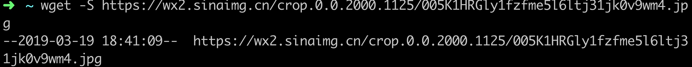
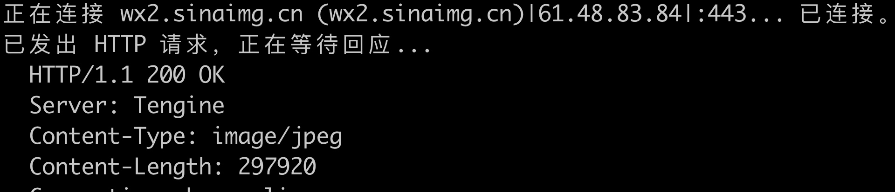

架构之CDN相关
介绍
CDN使用背景，图片的分布式存储
CDN 网络原理概述
批量添加、切换 CDN 的步骤和注意事项
多 CDN 切换的步骤和注意事项
CDN 访问故障分析
常见用法
图片和静态资源的缓存
一些变化不频繁的api缓存
原理
wget -S -O /dev/null https://wx2.sinaimg.cn/crop.0.0.2000.1125/005K1HRGly1fzfme5l6ltj31jk0v9wm4.jpg
一) 请求dns解析,并cname到cdn厂商的域名

二) 再次请求dns解析,并获取到cdn厂商的全局负载均衡ip列表

三) 全局负载均衡 根据客户端的ip,url 等信息内部请求 区域负载均衡系统
-
区域负载均衡根据信息,逐层查找,获取离客户端最近&有资源的缓存服务器地址, - 返回给
全局负载均衡(回源发生在这个阶段) -
全局负载均衡返回给客户端 该缓存服务器地址
客户端请求缓存服务器,拿到文件

关键字
回源
回源的意思就是,回到源头服务器取资源, 因为cdn为多级缓存,当请求资源404时,将逐层向上级cdn缓存获取资源,直至到服务器源站查找资源
资源获取方式
pull
逐层查找,资源不存在,最终到源头服务器获取资源并缓存到各级cdn
push
源头服务器主动上传资源到cdn缓存服务器
信号管理,当接收到关闭信号的时候,处理完最后的数据再关闭
<?php
declare(ticks = 1);
function sig_handler($sig) {
switch($sig) {
case SIGINT:
error_log("接收信号SIGINT");
exit(1);
case SIGTERM:
error_log("接收信号SIGTERM");
exit(1);
case SIGHUP:
error_log("接收信号SIGHUP");
exit(1);
}
}
pcntl_signal(SIGINT, "sig_handler");
pcntl_signal(SIGTERM, "sig_handler");
pcntl_signal(SIGHUP, "sig_handler");
while (true) {
error_log("哈哈哈");
sleep(3);
}
golang 的时间库常用语法
package main
import (
"fmt"
"time"
)
// 月份 1,01,Jan,January
// 日 2,02,_2
// 时 3,03,15,PM,pm,AM,am
// 分 4,04
// 秒 5,05
// 年 06,2006
// 周几 Mon,Monday
// 时区时差表示 -07,-0700,Z0700,Z07:00,-07:00,MST
// 时区字母缩写 MST
func main() {
fmt.Println(time.Now().Zone()) // 时区
fmt.Println(time.Now().UnixNano()) // 从1970年1.1 至今的纳秒数
fmt.Println(time.Now().UnixNano() / 1000000) // 从1970年1.1 至今的毫秒数
fmt.Println(time.Now().Unix()) // 从1970年1.1 至今的秒数
// 时间戳转换为 Y-m-d H:i:s
ttt := time.Unix(1551926194, 0) // 参数1 毫秒, 参数2 纳秒,将毫秒,纳秒转化为 time类型
ts := ttt.Format("2006-01-02 15:04:05")
fmt.Println(ts) // 将time类型转化为 Y-m-d H:i:s
tt, _ := time.Parse("2006-01-02 15:04:05", ts)
fmt.Println(tt.Unix())
tt2 := tt.Add(3 * time.Hour) // 给当前时间向前加3小时
tt3 := tt.Add(-3 * time.Hour) // 给当前时间向前加3小时
fmt.Println(tt2.Format("2006-01-02 15:04:05"))
fmt.Println(tt3.Format("2006-01-02 15:04:05"))
tt4 := tt.AddDate(3, 3, 3) // 给当前时间增加3年3个月3天
fmt.Println(tt4.Format("2006-01-02 15:04:05"))
// 简易的定时器
tick := time.Tick(1 * time.Second)
for t := range tick {
// 时间格式化转化为 标准时间段 类似于php的 Y-m-d H:i:s
fmt.Println(t.Format("2006-01-02 15:04:05"))
}
}
类mysql order 多值排序
function orderBy($data, $orders) {
$sorts = [
'desc' => SORT_DESC,
'asc' => SORT_ASC
];
$tmp = [];
foreach ($orders as $order => $sort) {
$cols = array_column($data, $order);
if(!isset($sorts[$sort])) {
return $data;
}
$tmp[] = $cols;
$tmp[] = $sorts[$sort];
}
$tmp[] = $data;
call_user_func_array('array_multisort', $tmp);
// array_multisort($cols, $sorts[$sort], $data);
print_r($data);
return $data;
}
$data = [
['score'=>2, 'date'=>'2015'],
['score'=>2, 'date'=>'2014'],
['score'=>1, 'date'=>'2017'],
['score'=>3, 'date'=>'2014'],
];
$order = [
'score' => 'asc',
'date' => 'desc'
];
$order = orderBy($data, $order);
cellnet 网络框架,源码解读
├── cellnet
│ ├── codec // 编码格式
│ │ └── json // json格式编码包
│ │ └── json.go // json格式适配器
│ ├── codec.go // 编码适配器
│ ├── internal // 中文意思,内部,此处是内部用函数包的意思
│ │ ├── log.go // 记录日志,初始化
│ │ └── sesmgr.go // 会话管理功能的包, 包括增加,移除,获取,遍历,统计等功能
│ ├── log.go // 记录日志,初始化
│ ├── meta.go // 目标消息体
│ ├── packet // 封包解包库
│ │ ├── log.go // 记录日志,初始化
│ │ ├── packet.go // 核心的封包解包器,2个功能,接收变长包,发送变长包
│ │ ├── pktreader.go // Packet,Reader 包数据阅读器
│ │ ├── pktwriter.go // Packet,Writer 包数据写入器
│ │ ├── recv.go // 接收, length-type-value 封包数据
│ │ ├── send.go // 发送, length-type-value 封包数据
│ │ └── setup.go // 启动封包器,设定回调进程
│ ├── peer.go // 会话管理器
│ ├── queue.go // 事件循环队列
│ ├── socket
│ │ ├── acceptor.go // 侦听端口,建立session,管理session,监听端口等
│ │ ├── connector.go // 连接器, 开始连接,结束连接,获取session
│ │ ├── event.go // 定义了各种事件发生时的结构体
│ │ ├── log.go // 记录日志,初始化
│ │ ├── peer.go // socket端口,名称,队列,派发事件
│ │ └── session.go // 原始连接,同步器,通讯端口,消息队列
│ └── test
│ └── test_test.go // 测试
└── chat
├── client
│ └── main.go // 客户端
├── proto
│ └── chat.go // 消息通讯格式
└── server
└── main.go // 服务器
客户端分析
clickhouse 奇技淫巧
函数
positionCaseInsensitive不区分大小写,查找字符串的所在位置, 未找到则为0
positionCaseInsensitiveUTF8同上,不过汉字也算作一个字符
cityHash64快速哈希,规则相同
groupArray根据group 将一个或者多个字段合并成数组
intDiv整除,intDiv(时间戳, 3600)*3600 即可按照每小时分组
常用
optimize table 表名如果是一个 聚合类型表,那么可以将主动触发一次聚合
prometheus 安装部署
介绍
Prometheus是一套开源的监控&报警&时间序列数据库的组合,起始是由SoundCloud公司开发的。成立于2012年，之后许多公司和组织接受和采用prometheus,他们便将它独立成开源项目，并且有公司来运作.该项目有非常活跃的社区和开发人员，目前是独立的开源项目，任何公司都可以使用它，2016年，Prometheus加入了云计算基金会，成为kubernetes之后的第二个托管项目.google SRE的书内也曾提到跟他们BorgMon监控系统相似的实现是Prometheus。现在最常见的Kubernetes容器管理系统中，通常会搭配Prometheus进行监控。
数据类型
Counter
- 用于累计值,请求次数,完成数等
- 一直增加,不会减少
- 重启后,会被重置
Gauge
- Gauge 常规数值, 温度变化,CPU,内存,网络变化
- 可变大,可变小
- 重启进程后,重置
Histogram
- 直方图,跟踪时间发生,请求持续时间或响应时间的规模
- 可对记录内容分组,提供 count和 sum 全部值的功能
Summary
在prometheus中,任何可被采集的目标都被称为instance,相同类型的instance的集合被称为job
- job: api-server
- instance1: 1.2.3.4:5670
- instance2: 1.2.3.4:5671
- instance3: 5.6.7.8:5670
- instance3: 5.6.7.8:5671
下载
wget https://github.com/prometheus/prometheus/releases/download/v2.7.1/prometheus-2.7.1.linux-amd64.tar.gz
安装
- 解压
tar -zxvf prometheus-2.7.1.linux-amd64.tar.gz
- 创建目录
mv ./prometheus-2.7.1.linux-amd64 /usr/local/prometheus
- 创建用户和用户组
groupadd prometheus
useradd -g prometheus -s /sbin/nologin prometheus
配置开机启动&守护进程
- 创建文件
vim /usr/lib/systemd/system/prometheus.service
- 添加内容
[Unit]
Description=Prometheus
Documentation=https://prometheus.io/
After=network.target
[Service]
# Type设置为notify时，服务会不断重启
Type=simple
User=prometheus
# --storage.tsdb.path是可选项，默认数据目录在运行目录的./dada目录中
ExecStart=/usr/local/prometheus/prometheus --config.file=/usr/local/prometheus/prometheus.yml --storage.tsdb.path=/var/lib/prometheus
Restart=on-failure
[Install]
WantedBy=multi-user.target
- 修改权限
chown prometheus:prometheus /usr/lib/systemd/system/prometheus.service
- 开启守护进程
systemctl enable prometheus
- 启动进程
systemctl start prometheus
使用
编译
- 下载
go get -u -v github.com/f1yegor/clickhouse_exporter
- mac 下编译linux 系统软件
cd $GOPATH/github.com/f1yegor/clickhouse_exporter
CGO_ENABLED=0 GOOS=linux GOARCH=amd64 go build
启动
- 每台子节点机器都要添加这个任务
vim clickhouse_exporter.sh
- 添加内容
#!/usr/bin/env bash
/usr/local/clickhouse_exporter/clickhouse_exporter -log.level=debug -scrape_uri=http://127.0.0.1:8123
- 启动脚本
chmod +x ./clickhouse_exporter.sh
nohup clickhouse_exporter.sh &
- 添加定时任务
重新打开 prometheus ,修改配置文件
prometheus.yml,增加配置
此时,数据将会被prometheus所记录
- job_name: 'clickhouse'
static_configs:
- targets: ['10.0.0.1:9116']
labels:
instance: node-01
- targets: ['10.0.0.2:9116']
labels:
instance: node-02
- targets: ['10.0.0.3:9116']
labels:
instance: node-03
优化
总结
下拉框统一查询接口
描述
在设计数据查询后台时,经常会遇到一些下拉菜单,需要进行筛选,所以常常需要写一些数据查询接口,这样的接口写多了以后,就需要将其统一抽象起来,方便使用
所以编写了这样一套统一api接口
使用方法
请求地址
/api/fields/any
请求方式
GET
请求参数
| 字段 | 类型 | 描述 |
|---|---|---|
| table | string | 指定表名称,可以是抽象表 |
| field | string | 指定要取出的字段, 可以是抽象字段 |
| type | string | 目前只有 kv, v |
| profiex | string | 字段名添加统一前缀 |
配置参数
前置查询
后置查询
虚拟字段
回调函数
返回格式指定
kancloud 文档下载器
介绍
最近在 kancloud(看云) 上看到一个关于 go语言的文档感觉质量非常不错,但是作者并没有开启下载功能,但我的大部分阅读时间,都是在地铁上,用ipad观看
简单看了下看云的api, 决定用nodejs+gitbook制作一个 pdf下载器